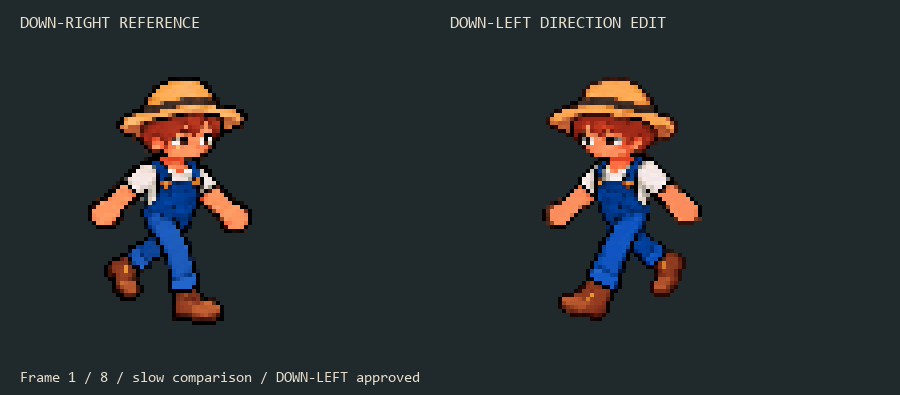
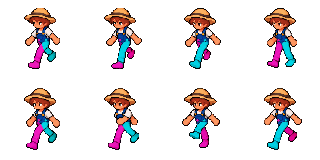
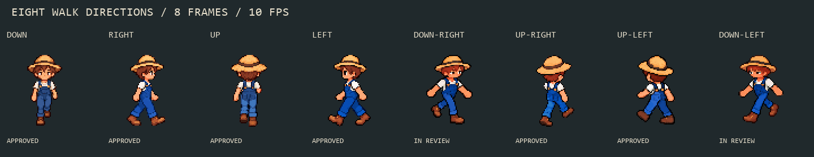
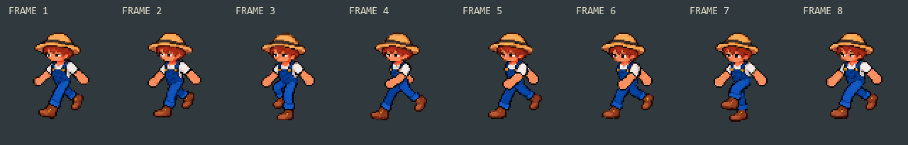

Eight frames at 10 FPS. Original DOWN shown at the same integer 2x scale.

This attempt failed limb ownership and was not used as the final pose source.

UR03 boot4-r4 and approved UL03 selected. DOWN-LEFT approved. DOWN-RIGHT arm repair awaits review.


DOWN-LEFT approved by you on 2026-10-05.
Approved UR03 / UL03 review · Validation and source sampling